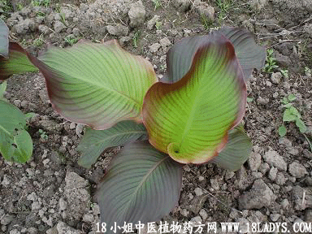

别名：旱芋仔。
植物名：旱芋。
生长环境：本品为草本。杂粮或蔬菜植物，栽培于山坡地和旱田，性耐短期干旱，收获期较早。
分布：原产于印度，现广种于广东各地。
入药部分：原产于印度，现广种于广东各地。
入药部分：根块。晒干用，陈久为佳。
性味：性平、味甘。
功能：去大肠湿热。
主治、用量和用法：1、湿热肚痛：干用5钱至1两，煲粥食；2、大便溏泄：用法同上；3、痢疾：用法同上。
（方歌）九爪芋干本领强，大肠湿热最擅长，腹痛便溏还泻痢，煲粥食之效非常。
按：家种芋类，品种名称甚多，本书芋英干的科目，拉丁学名与九爪芋同，用块根入药者多用九爪芋，用茎入药者可不必选择。